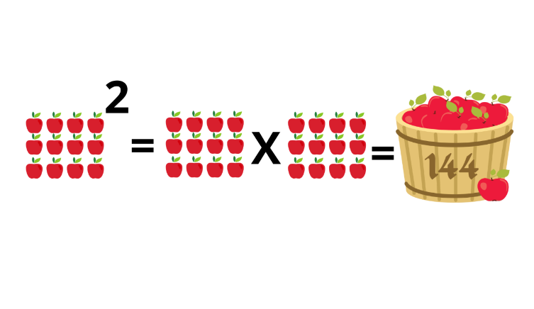
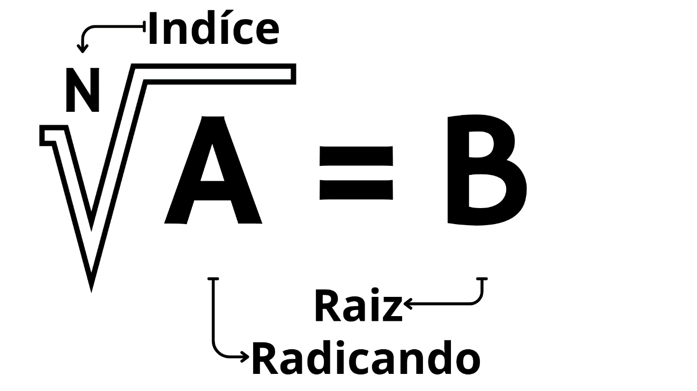
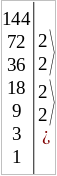

Potenciação
Um valor A potenciado por um valor B se torna um valor C é a potenciação do valor A sobre o valor B ou a multiplicação do valor A com ele mesmo em uma quantidade de valor B.
a^b = c
Exemplo:
Joãozinho tem 12 maçãs, Osmar falou que ia dar a quantidade de maças do Joãozinho ao quadrado, quantas maças Osmar deu:
Resposta: Osmar deu 144 maçãs.
Radiciação
A Radiciação e a operação inversa da potenciação, ela contem 3 valores o índice, o radical e o radicando representados respectivamente na imagem abaixo por N, A e B
Como calcular:
Para calcular raiz quadrada podemos utilizar o processo fatoração, aonde pegamos um numero e os dividimos pelos menores divisores múltiplos, ou seja, os menores valores primos que esse número possui se divide e depois multiplicamos essa sequência de números para obter o resultado que é a raiz.
√144 = ?
√144 = 2.3.3 = 12
Resposta: Roberto tem 1 maçã e meia.
Representação visual na reta do exemplo